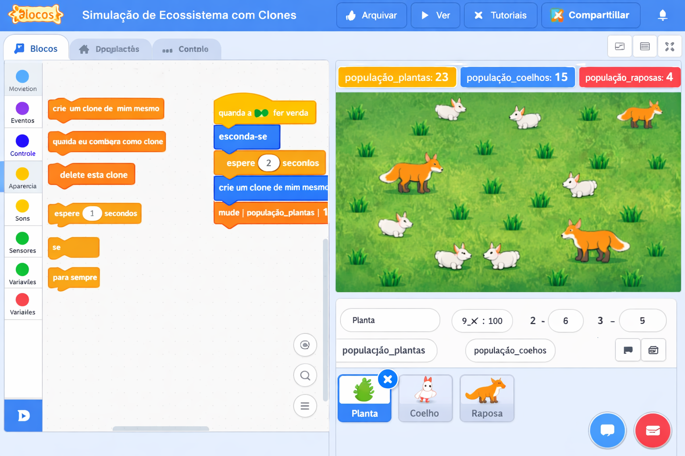
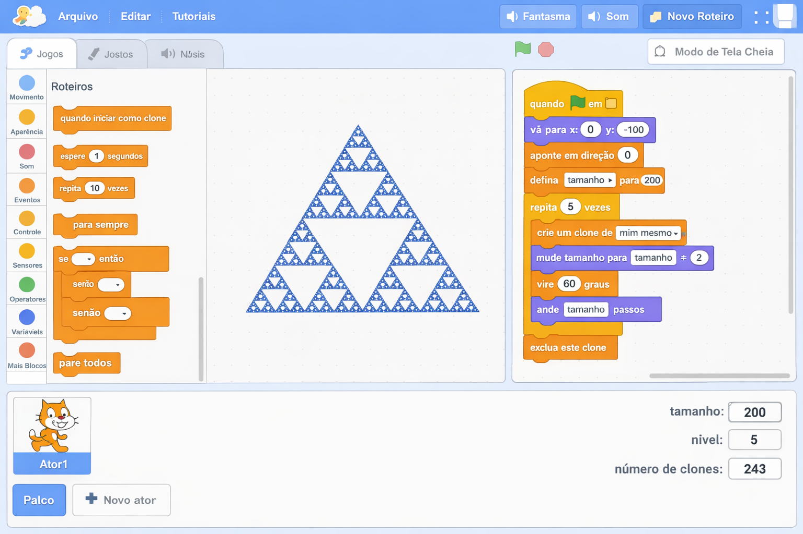
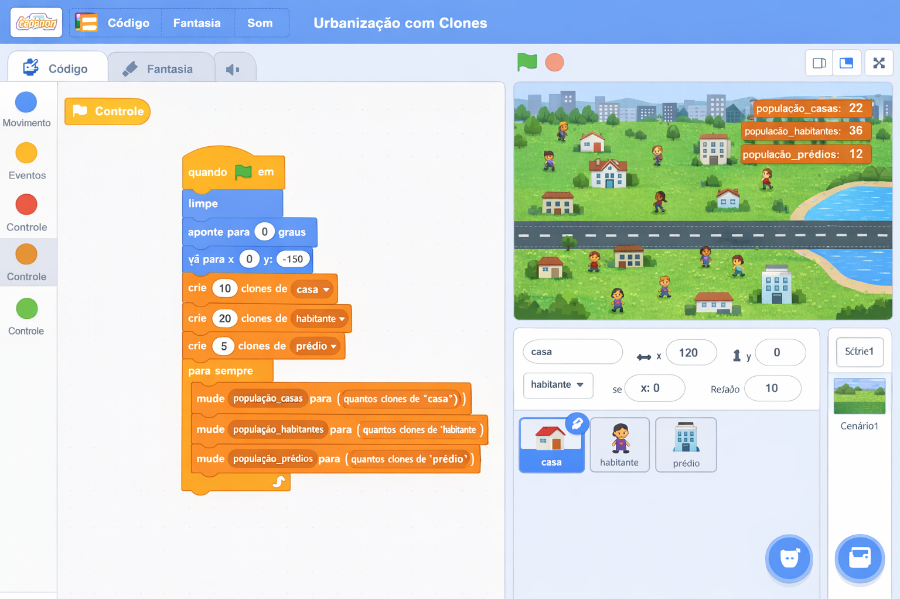
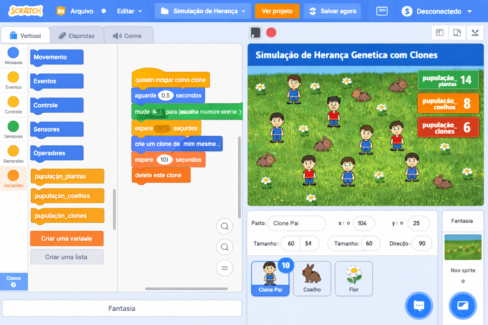

Projetos Didáticos - 8º Ano
Simulações e Clones: criando sistemas dinâmicos
🌿 PROJETO 8º ANO: "ECOSSISTEMA DINÂMICO"
Descrição do Projeto
Os alunos criarão uma simulação de um ecossistema simples, utilizando clones para representar plantas (produtores), coelhos (consumidores primários) e raposas (consumidores secundários). O projeto deve incluir clones que se movem, se reproduzem e interagem entre si, além de variáveis para monitorar as populações. É uma oportunidade para explorar o pensamento sistêmico e a complexidade dos ecossistemas.

Objetivos de Aprendizagem
- Cognitivos: Compreender relações em cadeias alimentares, analisar equilíbrio ecológico, modelar sistemas complexos.
- Técnicos: Utilizar clones (
crie um clone de [mim mesmo]), controlar o comportamento de clones, usar variáveis globais para monitorar populações, aplicar loops e condicionais. - Socioemocionais: Desenvolver pensamento sistêmico, trabalhar em equipe para ajustar parâmetros da simulação, discutir impactos ambientais.
📚 Alinhamento com a BNCC e DCE-PR
- EF08CI02 – Analisar cadeias alimentares e fluxo de energia em ecossistemas.
- EF08MA04 – Utilizar variáveis e modelar situações matemáticas (aqui, populações).
- EF69LP47 – Analisar e construir textos com escolhas que levem o leitor a diferentes caminhos (feedback na simulação).
- Competência Geral 2 – Pensamento Científico, Crítico e Criativo.
Passo a Passo do Projeto
Fase 1: Planejamento do Ecossistema (1 aula de 50 min)
Atividade: Em grupos, os alunos definem as espécies e as regras de interação. Exemplo simplificado:
- Plantas: Clones que aparecem aleatoriamente e são "comidas" por coelhos.
- Coelhos: Movem-se aleatoriamente; ao tocar uma planta, a planta é removida e o coelho ganha energia (podendo reproduzir).
- Raposas: Movem-se em direção aos coelhos; ao tocar um coelho, o coelho é removido e a raposa ganha energia.
Os alunos devem definir taxas de reprodução e a energia inicial de cada espécie.
Fase 2: Implementação no Scratch (3 aulas)
Preparação: Criar os sprites: Planta, Coelho, Raposa. Criar as variáveis
globais: pop_plantas, pop_coelhos, pop_raposas.
Sprite Planta:
Sprite Coelho:
Sprite Raposa:
Monitoramento:
Fase 3: Experimentação e Análise (1 aula)
Os alunos executam a simulação e observam o comportamento das populações. O professor pode propor perguntas:
- O que acontece se aumentarmos a taxa de reprodução das plantas?
- E se colocarmos muitas raposas no início?
- Como o sistema se comporta ao longo do tempo?
Os alunos devem registrar suas observações e apresentar conclusões sobre o equilíbrio ecológico.
Rubrica de Avaliação
- ✅ Modelagem (2 pontos): Regras ecológicas definidas corretamente (cadeia alimentar).
- ✅ Implementação (3 pontos): Uso adequado de clones e variáveis; código funcional.
- ✅ Análise (3 pontos): Observações e conclusões sobre a simulação.
- ✅ Criatividade (2 pontos): Adição de elementos extras (clima, desmatamento, etc.).
Extensões e Desafios
- Adicionar listas: Armazenar histórico das populações para gerar gráficos.
- Incluir variáveis ambientais: Como "umidade" ou "temperatura" que afetam a reprodução das plantas.
- Intervenção humana: Botões que permitem ao usuário adicionar ou remover indivíduos manualmente.
- Diferentes cenários: Floresta, deserto, etc., com regras adaptadas.
📐 PROJETO MATEMÁTICA: "FRACTAIS COM CLONES"
Descrição do Projeto
Os alunos criarão um gerador de fractais utilizando clones. Cada clone representa um elemento recursivo que se posiciona e se multiplica seguindo uma regra matemática. O projeto explora sequências, progressões geométricas e auto-similaridade, exigindo raciocínio abstrato para definir os padrões de crescimento. Exemplo: geração da Árvore de Pitágoras ou Tapete de Sierpinski.

Objetivos de Aprendizagem
- Cognitivos: Compreender progressões geométricas, identificar padrões de auto-similaridade, modelar recursividade matemática.
- Técnicos: Usar clones para gerar figuras recursivas, controlar posição e direção com coordenadas, aplicar blocos de operadores e repetição aninhada.
- Socioemocionais: Desenvolver pensamento computacional e algébrico, trabalhar em equipe na definição das regras, comunicar padrões matemáticos.
📚 Alinhamento com a BNCC e DCE-PR
- EF08MA06 – Resolver e elaborar problemas que envolvam cálculo do valor numérico de expressões algébricas, utilizando as propriedades das operações.
- EF08MA10 – Associar uma equação linear de 1º grau com duas incógnitas a uma reta no plano cartesiano.
- EF08MA15 – Construir figuras planas semelhantes em situações de ampliação e redução, identificando a razão de semelhança.
- Competência Geral 4 – Utilizar diferentes linguagens para expressar e comunicar ideias.
Passo a Passo do Projeto
Fase 1: Planejamento do Fractal (1 aula)
Atividade: Em grupos, os alunos escolhem um fractal conhecido (Árvore de Pitágoras, Tapete de Sierpinski, Floco de neve de Koch) e definem a regra recursiva. Exemplo para a Árvore de Pitágoras:
- Um segmento (tronco) divide‑se em dois ramos menores, com ângulo fixo.
- Cada ramo é um novo clone que segue a mesma regra.
- A profundidade da recursão é controlada por uma variável.
Fase 2: Implementação no Scratch (3 aulas)
Preparação: Criar um sprite “Ramo” que desenha um segmento e cria clones.
Sprite Ramo:
Os alunos ajustam os ângulos, comprimentos e cores para cada nível.
Fase 3: Análise e Experimentação (1 aula)
Os alunos variam os parâmetros (ângulo, redução de tamanho, profundidade) e observam como a forma final se altera. Perguntas orientadoras:
- Qual a relação entre a profundidade e o número total de segmentos?
- Como a redução do comprimento afeta a semelhança entre os níveis?
- É possível criar um fractal com área finita e perímetro infinito?
Rubrica de Avaliação
- ✅ Modelagem (2 pts): Regra recursiva definida matematicamente.
- ✅ Implementação (3 pts): Uso correto de clones, recursão e variáveis.
- ✅ Análise (3 pts): Relação entre parâmetros e forma do fractal.
- ✅ Criatividade (2 pts): Criação de um fractal original ou combinação de regras.
Extensões e Desafios
- Fractais com cores: Variar a cor conforme a profundidade.
- Interação: Botões para alterar ângulos e tamanhos em tempo real.
- Exploração de área/perímetro: Calcular e exibir essas medidas com variáveis.
- Conectar com progressões: Mostrar que o número de clones segue uma progressão geométrica.
🏙️ PROJETO GEOGRAFIA: "SIMULADOR DE URBANIZAÇÃO"
Descrição do Projeto
Os alunos construirão um modelo de ocupação do espaço urbano usando clones. Cada clone representa uma edificação (residencial, comercial, área verde) e se espalha conforme regras de zoneamento, densidade populacional e infraestrutura. O projeto exige raciocínio sistêmico para equilibrar crescimento e sustentabilidade, além de manipular variáveis globais.

Objetivos de Aprendizagem
- Cognitivos: Compreender processos de urbanização, zoneamento, impacto ambiental e social, analisar crescimento populacional.
- Técnicos: Utilizar clones com diferentes comportamentos, variáveis para monitorar área construída e áreas verdes, estruturas condicionais para regras de ocupação.
- Socioemocionais: Desenvolver pensamento crítico sobre planejamento urbano, trabalhar em equipe na definição de políticas de uso do solo, debater sustentabilidade.
📚 Alinhamento com a BNCC e DCE-PR
- EF08GE09 – Analisar a organização do espaço urbano e as transformações das cidades.
- EF08GE10 – Identificar e analisar problemas ambientais urbanos, propondo soluções.
- EF08MA04 – Utilizar variáveis para modelar situações matemáticas (aqui, população e área).
- Competência Geral 7 – Argumentar com base em fatos, dados e informações confiáveis.
Passo a Passo do Projeto
Fase 1: Planejamento do Modelo (1 aula)
Atividade: Os grupos definem os tipos de clones (residencial, comercial, área verde) e as regras de ocupação. Exemplo:
- Residencial: Pode surgir próximo a áreas verdes ou infraestrutura.
- Comercial: Surge onde há alta densidade residencial.
- Área verde: Diminui a poluição e melhora a qualidade de vida.
Definir variáveis globais: populacao, area_verde,
poluicao.
Fase 2: Implementação no Scratch (3 aulas)
Preparação: Sprites: Residencial, Comercial, Verde.
Sprite Residencial (exemplo):
Sprite Verde:
Fase 3: Experimentação e Análise (1 aula)
Executar a simulação variando parâmetros iniciais (número de residências, taxas de criação de áreas verdes). Perguntas:
- Como a falta de áreas verdes afeta a poluição?
- O que ocorre se o comércio crescer desordenadamente?
- Que estratégias podem ser implementadas para tornar a cidade mais sustentável?
Rubrica de Avaliação
- ✅ Modelagem (2 pts): Regras de urbanização coerentes e bem definidas.
- ✅ Implementação (3 pts): Uso correto de clones e variáveis globais.
- ✅ Análise (3 pts): Conclusões sobre impacto das variáveis no sistema.
- ✅ Criatividade (2 pts): Inclusão de elementos como transporte público, coleta de lixo, etc.
Extensões e Desafios
- Mapa interativo: Permitir que o usuário clique para adicionar áreas verdes.
- Indicadores: Exibir gráficos de poluição, área verde e população ao longo do tempo.
- Cenários históricos: Simular diferentes políticas de zoneamento.
- Conexão com dados reais: Coletar dados de uma cidade local e tentar reproduzir.
🧬 PROJETO CIÊNCIAS: "SIMULADOR DE HERANÇA GENÉTICA"
Descrição do Projeto
Os alunos criarão uma simulação de herança genética mendeliana utilizando clones. Cada clone representa um indivíduo com alelos (dominante/recessivo) para uma característica (ex: cor de flor). O projeto envolve a criação de pares de alelos, cruzamentos e análise de proporções fenotípicas, exigindo raciocínio abstrato e resolução sistemática de problemas probabilísticos.

Objetivos de Aprendizagem
- Cognitivos: Compreender conceitos de alelos dominantes/recessivos, genótipo, fenótipo, probabilidade de herança.
- Técnicos: Usar clones para representar indivíduos, manipular listas para armazenar alelos, aplicar operadores lógicos e aleatórios para simular cruzamentos.
- Socioemocionais: Desenvolver pensamento probabilístico, colaborar na análise de padrões genéticos, discutir implicações éticas.
📚 Alinhamento com a BNCC e DCE-PR
- EF08CI06 – Identificar e analisar as características hereditárias e a variabilidade genética.
- EF08MA22 – Calcular a probabilidade de eventos aleatórios em situações simples (cruzamentos).
- EF08CI07 – Analisar a importância da variabilidade genética para a evolução.
- Competência Geral 5 – Compreender, utilizar e criar tecnologias digitais de forma crítica e ética.
Passo a Passo do Projeto
Fase 1: Planejamento Genético (1 aula)
Atividade: Definir a característica (ex: cor da flor: vermelho dominante, branco recessivo). Os alunos estabelecem as regras de cruzamento:
- Cada clone tem dois alelos (listas:
alelo1,alelo2). - O cruzamento entre dois indivíduos gera um novo clone com um alelo de cada pai.
- O fenótipo é determinado pela presença de pelo menos um alelo dominante.
Fase 2: Implementação no Scratch (3 aulas)
Preparação: Sprite “Indivíduo” e variáveis globais populacao,
frequencia_dominante.
Sprite Indivíduo:
Reprodução automática:
Fase 3: Experimentação e Análise (1 aula)
Executar a simulação partindo de diferentes genótipos iniciais. Observar a frequência fenotípica ao longo das gerações. Perguntas:
- Qual a proporção fenotípica esperada na segunda geração (3:1)? A simulação se aproxima?
- O que acontece se houver seleção natural (ex: cor vermelha atrai predadores)?
- Como a deriva genética afeta populações pequenas?
Rubrica de Avaliação
- ✅ Modelagem (2 pts): Regras genéticas corretas e representação adequada.
- ✅ Implementação (3 pts): Uso de listas, clones e operações probabilísticas.
- ✅ Análise (3 pts): Comparação entre resultados simulados e previsões teóricas.
- ✅ Criatividade (2 pts): Adição de características múltiplas, dominância incompleta, etc.
Extensões e Desafios
- Múltiplas características: Simular di‑hibridismo (ex: cor e textura).
- Seleção natural: Remover clones com certos fenótipos e observar evolução.
- Gráficos: Registrar a frequência de alelos a cada geração.
- Interação: Botão para cruzar indivíduos específicos escolhidos pelo usuário.
Outras Ideias de Projetos para o 8º Ano
Material de Apoio para o Professor
📌 Dicas para a Atividade
- Comece simples: Implemente apenas plantas e coelhos primeiro, depois adicione raposas.
- Teste com diferentes taxas: Faça os alunos experimentarem e registrarem o que observam.
- Utilize o "Modo de exibição de tela cheia": Ajuda a visualizar melhor o movimento dos clones.
📚 Conexões Curriculares
- Ciências: Ecologia, cadeias alimentares, fatores bióticos e abióticos.
- Matemática: Modelagem, análise de dados, gráficos.
- Geografia: Impacto humano no meio ambiente.